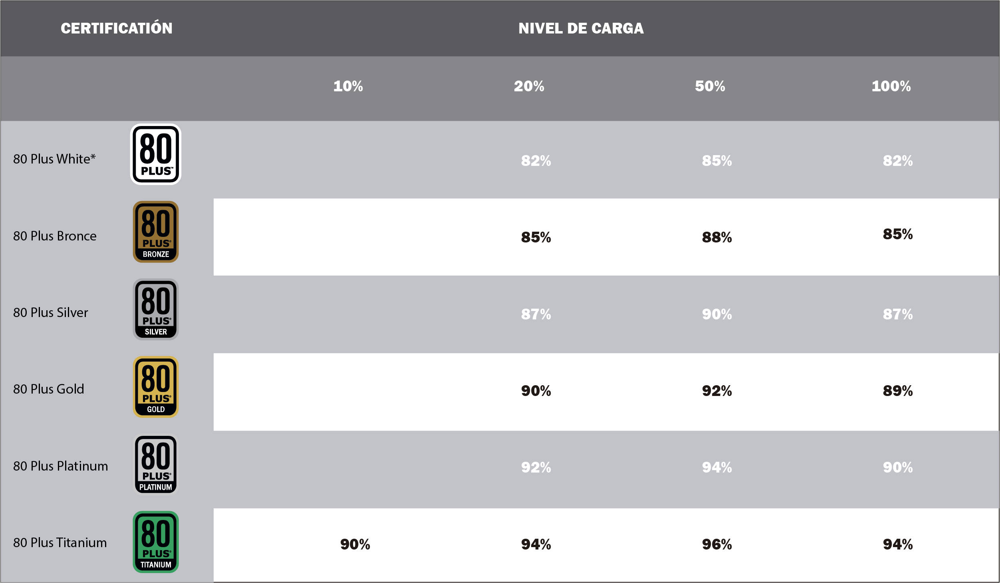

La electrónica nunca funciona al 100% eficiencia en el mundo real. La etiqueta “80 Plus” en una PSU significa que ha sido clasificada para un cierto nivel de eficiencia.
Cuando una fuente de alimentación (u otro dispositivo electrónico) es 80 por ciento eficiente, el 80 por ciento de la potencia nominal se entrega al sistema y el otro 20 por ciento se pierde en forma de calor. Si una fuente de alimentación está extrayendo 500 W de la pared y es 80 por ciento eficiente al 100 por ciento de carga, solo podrá entregar 400 W a la salida máxima. Tal PSU será clasificada a 400W, ya que es la potencia máxima que será entregada al sistema.
La calidad de las piezas es otra gran razón para obtener una fuente de alimentación más eficiente. Cuanto más eficiente es una PSU, menos calor genera. Eso tiende a significar que los componentes duran más tiempo, y no necesita usar tanto el ventilador de refrigeración. Aún así, esto no siempre se cumple.
Algunas fuentes de alimentación son lo suficientemente eficientes como para no tener que conectar el ventilador todo el tiempo. Dependiendo de cada caso, una fuente de alimentación menos eficiente tiene el potencial de aumentar la temperatura ambiente en el interior de la caja/torre.
